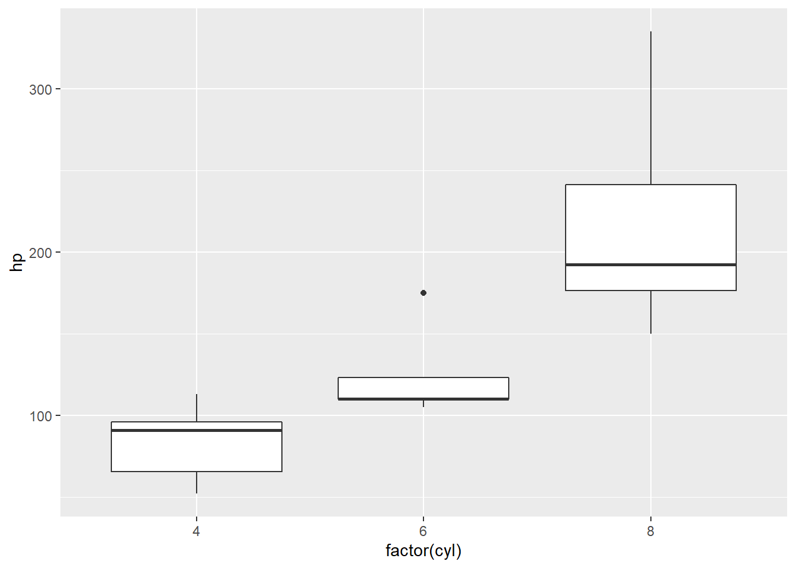
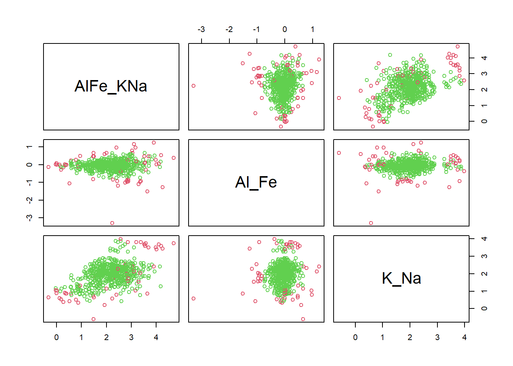
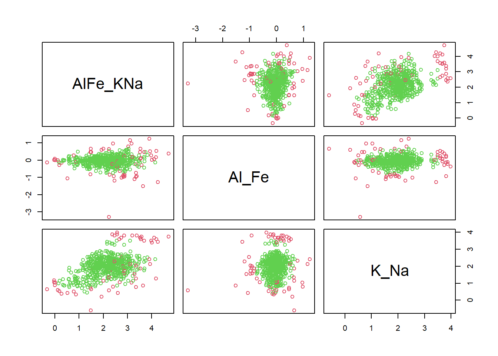

10 Détection de valeurs aberrantes et imputation de données manquantes
️ Objectifs spécifiques:
À la fin de ce chapitre, vous
- saurez comment procéder à l’imputation de valeurs manquantes en mode univarié et multivarié
- saurez comment détecter des valeurs aberrantes en mode univarié et multivarié
Note. Ce chapitre a été initialement rédigé par Zonlehoua Coulibali, qui a gracieusement accepté de contribuer à ces notes de cours. Le texte a été adapté au format du manuel par Serge-Étienne Parent.
Les données écologiques sont généralement recueillies à différentes échelles, concernent plusieurs sites et plusieurs variables (corrélées ou non), impliquent différents individus de différentes agences et peuvent s’étendre sur plusieurs années (Alameddine et al., 2010; Lokupitiya et al., 2006). De ce fait, la plupart de ces bases de données contiennent des valeurs manquantes et/ou aberrantes liées à différentes sources d’erreurs, pouvant parfois limiter l’utilité des inférences statistiques (Collins et al., 2001; Glasson-Cicognani et Berchtold, 2010). Il convient alors de les traiter correctement avant d’effectuer les analyses statistiques car les ignorer peut entraîner, outre une perte de précision, de forts biais dans les modèles d’analyse (Alameddine et al., 2010; Filzmoser et al., 2008; Glasson-Cicognani et Berchtold, 2010).
10.1 Données manquantes: définition, origine, typologie et traitement
10.1.1 Définition
Les tableaux de données sont organisés en lignes et colonnes. Les lignes représentent les observations, les unités, les sujets ou les cas étudiés selon le contexte, et les colonnes représentent les variables mesurées pour chaque observation. Les entrées qui sont les valeurs (ou contenus) des cellules ou encore les valeurs observées, peuvent être des valeurs continues, ou des valeurs catégoriales (Little et Rubin, 2002). Considérant une variable aléatoire \(X\) quelconque, une donnée manquante \(x_m\), est une donnée pour laquelle la valeur de la variable \(X\) est inconnue (ou absente). En d’autres termes, on ne dispose pas de la valeur de \(X\) pour le sujet \(i\) donné. C’est une donnée non disponible qui serait utile pour l’analyse si elle était observée (Ware et al., 2012).
La littérature sur les données manquantes est plus abondante dans les domaines des sciences sociales sur les données d’enquêtes, et des sciences médicales (Davey et al., 2001; Graham, 2012). Pour représenter leur répartition dans la table de données, une matrice indicatrice des valeurs manquantes \(M = (m_{ij})\) est généralement utilisée où \(m_{ij}\) est une variable binaire qui prend la valeur 1 si la valeur de la variable (\(X\)) est observée et 0 si \(x\) est absent (Collins et al., 2001; Graham, 2012; Little et Rubin, 2002).
10.1.2 Origines des données manquantes
Les données manquantes ont des origines matérielles diverses. Des valeurs peuvent être absentes soit parce qu’elles n’ont pas été observées, ou qu’elles ont été perdues ou étaient incohérentes (Glasson-Cicognani et Berchtold, 2010. La donnée peut avoir été
- perdue lors de la collecte ou du processus d’enregistrement des données,
- non mesurée en raison du dysfonctionnement d’un équipement,
- non mesurable en raison de la disparition du sujet d’étude (mort, fugue, champ non récolté, etc.),
- écartée en raison d’une contamination,
- oubliée,
- non étudiée,
- etc.
10.1.3 Profils des données manquantes
Les auteurs traitant des données manquantes distinguent des formes de répartition des données manquantes et des mécanismes conduisant à ces dernières. La répartition des données manquantes décrit les dispositions des valeurs présentes et celles qui sont manquantes dans la matrice indicatrice. Les mécanismes à l’origine des données manquantes décrivent la relation probabiliste entre les valeurs observées et les valeurs manquantes de la table de données.
10.1.3.1 Répartition des données manquantes
Les données manquantes se répartissent selon différents cas de figures (Graham, 2012; Little et Rubin, 2002) dont les trois principaux sont
- les valeurs manquantes univariées,
- les valeurs manquantes monotones et
- celles non monotones ou arbitraires.
Cette distinction est fonction de la matrice indicatrice des valeurs manquantes. Cette matrice est dite à valeurs manquantes univariées ou de non-réponse univariée, lorsque pour une variable donnée, si une observation est absente, alors toutes les observations suivantes pour cette variable sont absentes (figure 10.1a). En expérimentation agricole, ce cas de figure est qualifié de problème de la parcelle manquante où, pour une raison quelconque (par exemple : une absence de germination, une destruction accidentelle d’une parcelle ou des enregistrements incorrects), un facteur à l’étude est non disponible. Les valeurs manquantes monotones surviennent lorsque la valeur d’une variable \(Y_j\) manquante pour un individu \(i\) implique que toutes les variables suivantes \(Y_k\) (\(k > j\)) sont manquantes pour cet individu (figure 10.1b). Les valeurs manquantes arbitraires ou non monotones ou encore générales, surviennent lorsque la matrice ne dessine spécifiquement aucune des formes précédentes (figure 10.1c).

Figure 10.1: Exemple de profils de données manquantes
Le module VIM permet de visualiser la structure des données manquantes.
## Loading required package: colorspace## Loading required package: data.table## data.table 1.12.8 using 2 threads (see ?getDTthreads). Latest news: r-datatable.com##
## Attaching package: 'data.table'## The following objects are masked from 'package:dplyr':
##
## between, first, last## The following object is masked from 'package:purrr':
##
## transpose## VIM is ready to use.
## Since version 4.0.0 the GUI is in its own package VIMGUI.
##
## Please use the package to use the new (and old) GUI.## Suggestions and bug-reports can be submitted at: https://github.com/alexkowa/VIM/issues##
## Attaching package: 'VIM'## The following object is masked from 'package:dbscan':
##
## kNN## The following objects are masked from 'package:yardstick':
##
## mape, smape## The following object is masked from 'package:recipes':
##
## prepare## The following object is masked from 'package:datasets':
##
## sleepPour l’exemple, prenons le tableau iris puis remplaçons au hasard des données par des valeurs manquantes (NA), puis vérifions les proportions de données manquantes et les proportions de combinaisons de données manquantes.
set.seed(2868374)
data("iris")
iris_NA <- iris
n_NA <- 20
row_NA <- sample(1:nrow(iris), n_NA, replace = TRUE)
col_NA <- sample(1:ncol(iris), n_NA, replace = TRUE)
for (i in 1:n_NA) iris_NA[row_NA[i], col_NA[i]] <- NA
summary(aggr(iris_NA, sortVar = TRUE))
##
## Variables sorted by number of missings:
## Variable Count
## Sepal.Width 0.046666667
## Species 0.040000000
## Petal.Length 0.020000000
## Petal.Width 0.020000000
## Sepal.Length 0.006666667##
## Missings per variable:
## Variable Count
## Sepal.Length 1
## Sepal.Width 7
## Petal.Length 3
## Petal.Width 3
## Species 6
##
## Missings in combinations of variables:
## Combinations Count Percent
## 0:0:0:0:0 132 88.0000000
## 0:0:0:0:1 4 2.6666667
## 0:0:0:1:0 2 1.3333333
## 0:0:0:1:1 1 0.6666667
## 0:0:1:0:0 3 2.0000000
## 0:1:0:0:0 6 4.0000000
## 0:1:0:0:1 1 0.6666667
## 1:0:0:0:0 1 0.6666667Avec la fonction matrixplot, il est possible de visualiser les données manquantes en rouge, tandis que les données présentes prennent un niveau de gris selon leur valeur.

10.1.3.2 Mécanismes conduisant aux données manquantes
Les mécanismes conduisant aux données manquantes décrivent la relation entre les valeurs manquantes et celles observées des variables de la table (Collins et al., 2001; Graham, 2012; Little et Rubin, 2002). En considérant la table de donnée \(Y = \{O,M\}\) où \(O = \left[ o_{i, j} \right]\) représente les données observées et \(M = \left[ m_{i, j} \right]\) la matrice indicatrice des données manquantes, le mécanisme à l’origine des données manquantes est défini par la distribution conditionnelle de \(M\) sachant \(Y\).
Lorsque la probabilité qu’une valeur soit manquante ne dépend ni des valeurs observées, ni de celles manquantes, les données sont dites manquantes complètement au hasard (* MCAR, missing completely at random*). La probabilité d’absence est donc la même pour toutes les observations et elle ne dépend que de paramètres extérieurs indépendants de cette variable (Collins et al., 2001; Graham, 2012; Heitjan, 1997; Little et Rubin, 2002; Rubin, 1976). Avec de telles données (MCAR), les régressions qui n’utilisent que les enregistrements complets, les moyennes des cas disponibles, les tests non-paramétriques et les méthodes basées sur les “moments”, sont toutes valides (Heitjan, 1997). Toutefois, une perte de précision est à prévoir dans les résultats (Collins et al., 2001).
Selon les mêmes auteurs, lorsque la probabilité qu’une valeur soit manquante dépend uniquement de la composante observée “O” (une ou plusieurs variables observées) mais pas des valeurs manquantes elles-mêmes, les données sont dites manquantes au hasard (* MAR: missing at random*). Dans ce cas, les méthodes du maximum de vraisemblance sont valides pour estimer les paramètres du modèle. Les procédures d’imputation multiples utilisent implicitement le mécanisme MAR (Collins et al., 2001; Heitjan, 1997).
Lorsque la probabilité qu’une valeur manque dépend de la valeur non observée de la variable elle-même (\(M\)), les données ne manquent pas au hasard (* MNAR: missing not at random*). Ce type de données ne doit pas être ignoré dans l’ajustement de modèles car elles induisent une perte de précision (inhérente à tout cas de données manquantes) mais aussi un biais dans l’estimation des paramètres (Collins et al., 2001; Heitjan, 1997).
10.1.4 Traitement des données manquantes
La présence de données manquantes dans une analyse peut conduire à des estimés de paramètres biaisés, gonfler les erreurs de type I et II, baisser les performances des intervalles de confiance (Collins et al., 2001) et entacher la généralisation des résultats (Taylor et al., 2002). Plusieurs méthodes existent pour calculer des estimés de paramètres de modèles approximativement sans biais, en présence de données manquantes.
10.1.4.1 L’analyse des cas complets
Cette méthode consiste à exclure du fichier de données tous les individus ayant au moins une donnée manquante (Glasson-Cicognani et Berchtold, 2010. Elle serait la plus utilisée pour traiter les valeurs manquantes mais n’est efficace que pour les cas de données manquant complètement au hasard (MCAR) lorsque le nombre de d’observations à éliminer n’est pas trop important (Davey et al., 2001).
En R, de manière générique, il est possible d’identifier une donnée manquante dans un tableau, une matrice ou un vecteur avec is.na, qui retourne un objet booléen (TRUE / FALSE). La fonction any permet d’identifier si au moins une valeur est vraie ou fausse dans un objet, alors que la fonction all permet d’identifier si toutes les valeurs sont vraies. On pourra vérifier si une ligne contient une valeur manquante avec la fonction apply, dans l’axe des lignes. Il faudra toutefois inverser le résultat booléen avec un ! pour faire en sorte que l’on écarte les valeurs manquantes.
row_missing <- iris_NA %>%
filter(apply(., 1, function(x) any(is.na(x))))
row_complete <- iris_NA %>%
filter(!apply(., 1, function(x) any(is.na(x))))
row_missing## Sepal.Length Sepal.Width Petal.Length Petal.Width Species
## 1 4.6 3.4 1.4 0.3 <NA>
## 2 5.7 NA 1.5 0.4 setosa
## 3 4.4 NA 1.3 0.2 setosa
## 4 5.1 NA 1.9 0.4 setosa
## 5 6.7 3.1 4.4 1.4 <NA>
## 6 6.2 2.2 4.5 NA versicolor
## 7 6.7 NA 5.0 1.7 versicolor
## 8 7.1 NA 5.9 2.1 virginica
## 9 6.7 NA 5.8 1.8 virginica
## 10 6.4 2.7 NA 1.9 virginica
## 11 6.5 NA 5.5 1.8 <NA>
## 12 5.6 2.8 4.9 NA virginica
## 13 7.7 2.8 6.7 2.0 <NA>
## 14 6.4 2.8 5.6 NA <NA>
## 15 6.3 2.8 NA 1.5 virginica
## 16 6.1 2.6 5.6 1.4 <NA>
## 17 NA 3.1 5.5 1.8 virginica
## 18 6.7 3.0 NA 2.3 virginicaAu lieu de apply, R fournit la fontion raccourci complete.cases.
Le module tidyr (inclus dans tidyverse) nous facilite la vie avec la fonction tidyr::drop_na, qui retire toutes les lignes contenant au moins une valeur manquante.
De même, on pourra évaluer la proportion de données manquantes.
## [1] 0.88Ou bien, évaluer la proportion de donnée manquante par groupe.
## Warning: Factor `Species` contains implicit NA, consider using `forcats::fct_explicit_na`## Warning: funs() is soft deprecated as of dplyr 0.8.0
## Please use a list of either functions or lambdas:
##
## # Simple named list:
## list(mean = mean, median = median)
##
## # Auto named with `tibble::lst()`:
## tibble::lst(mean, median)
##
## # Using lambdas
## list(~ mean(., trim = .2), ~ median(., na.rm = TRUE))
## This warning is displayed once per session.## # A tibble: 4 x 5
## Species Sepal.Length Sepal.Width Petal.Length Petal.Width
## <fct> <dbl> <dbl> <dbl> <dbl>
## 1 setosa 0 0.0612 0 0
## 2 versicolor 0 0.0204 0 0.0204
## 3 virginica 0.0217 0.0435 0.0652 0.0217
## 4 <NA> 0 0.167 0 0.167Pour terminer cette section, il est possible que certaines variables soient peu mesurées dans une étude. Au jugement, on pourra sacrifier une colonne contenant plusieurs données manquantes en vue de conserver des lignes.
10.1.4.2 L’imputation
L’imputation permet de créer des bases de données complètes (Donzé, 2001). Elle corrige la non-réponse partielle en substituant une “valeur artificielle” à la valeur manquante. Les auteurs distinguent l’imputation unique et l’imputation multiple.
10.1.4.2.1 L’imputation unique
L’imputation unique consiste à remplacer chaque donnée manquante par une seule valeur plausible telle que la moyenne calculée sur les données réellement observées, l’imputation par le ou les plus proche(s) voisin(s) (la technique des plus proches voisins est couverte au chapitre 11). Cette dernière remplace les données manquantes par des valeurs provenant d’individus similaires pour lesquels toute l’information a été observée. L’imputation peut aussi se faire par régression en remplaçant les valeurs manquantes par des valeurs prédites selon un modèle de régression ou des méthodes bayésiennes plus sophistiquées. L’imputation unique est valide en présence de données manquantes de type MAR (Davey et al., 2001; Donzé, 2001; Glasson-Cicognani et Berchtold, 2010.
Selon Heitjan (1997), il n’existe pas de règles strictes pour décider quand il faut entreprendre une imputation multiple. Néanmoins, si la fraction des observations avec des données manquantes est inférieure à par exemple 5%, et le mécanisme est ignorable (MCAR ou MAR), les analyses les plus simples sont satisfaisantes.
Bien que conçu principalement pour l’imputation multiple (on y arrive bientôt), le module mice permet l’imputation univariée. Nous allons tester l’imputation par la moyenne. Voyons par exemple la moyenne des longueurs des sépales.
## [1] 6.170588Lançons l’imputation par la fonction mice, puis la prédiction du tableau imputé par la fonction complete.
Le tableau original peut être comparé au tableau imputé.
## Sepal.Length Sepal.Width Petal.Length Petal.Width Species
## 7 4.6 3.4 1.4 0.3 <NA>
## 16 5.7 NA 1.5 0.4 setosa
## 39 4.4 NA 1.3 0.2 setosa
## 45 5.1 NA 1.9 0.4 setosa
## 66 6.7 3.1 4.4 1.4 <NA>
## 69 6.2 2.2 4.5 NA versicolor
## 78 6.7 NA 5.0 1.7 versicolor
## 103 7.1 NA 5.9 2.1 virginica
## 109 6.7 NA 5.8 1.8 virginica
## 112 6.4 2.7 NA 1.9 virginica
## 117 6.5 NA 5.5 1.8 <NA>
## 122 5.6 2.8 4.9 NA virginica
## 123 7.7 2.8 6.7 2.0 <NA>
## 133 6.4 2.8 5.6 NA <NA>
## 134 6.3 2.8 NA 1.5 virginica
## 135 6.1 2.6 5.6 1.4 <NA>
## 138 NA 3.1 5.5 1.8 virginica
## 146 6.7 3.0 NA 2.3 virginica## Sepal.Length Sepal.Width Petal.Length Petal.Width Species
## 7 4.6 3.4 1.4 0.3 setosa
## 16 5.7 4.4 1.5 0.4 setosa
## 39 4.4 3.0 1.3 0.2 setosa
## 45 5.1 3.8 1.9 0.4 setosa
## 66 6.7 3.1 4.4 1.4 versicolor
## 69 6.2 2.2 4.5 1.5 versicolor
## 78 6.7 3.0 5.0 1.7 versicolor
## 103 7.1 3.0 5.9 2.1 virginica
## 109 6.7 2.5 5.8 1.8 virginica
## 112 6.4 2.7 5.3 1.9 virginica
## 117 6.5 3.0 5.5 1.8 virginica
## 122 5.6 2.8 4.9 2.0 virginica
## 123 7.7 2.8 6.7 2.0 virginica
## 133 6.4 2.8 5.6 2.2 virginica
## 134 6.3 2.8 5.1 1.5 virginica
## 135 6.1 2.6 5.6 1.4 virginica
## 138 6.4 3.1 5.5 1.8 virginica
## 146 6.7 3.0 5.2 2.3 virginica## Sepal.Length Sepal.Width Petal.Length Petal.Width Species
## 7 4.600000 3.400000 1.400000 0.300000 <NA>
## 16 5.700000 3.052174 1.500000 0.400000 setosa
## 39 4.400000 3.052174 1.300000 0.200000 setosa
## 45 5.100000 3.052174 1.900000 0.400000 setosa
## 66 6.700000 3.100000 4.400000 1.400000 <NA>
## 69 6.200000 2.200000 4.500000 1.178169 versicolor
## 78 6.700000 3.052174 5.000000 1.700000 versicolor
## 103 7.100000 3.052174 5.900000 2.100000 virginica
## 109 6.700000 3.052174 5.800000 1.800000 virginica
## 112 6.400000 2.700000 3.680142 1.900000 virginica
## 117 6.500000 NA 5.500000 1.800000 <NA>
## 122 5.600000 2.800000 4.900000 1.178169 virginica
## 123 7.700000 2.800000 6.700000 2.000000 <NA>
## 133 6.400000 2.800000 5.600000 NA <NA>
## 134 6.300000 2.800000 3.680142 1.500000 virginica
## 135 6.100000 2.600000 5.600000 1.400000 <NA>
## 138 5.818881 3.100000 5.500000 1.800000 virginica
## 146 6.700000 3.000000 3.680142 2.300000 virginicaDans la colonne Sepal.Length, toutes les valeurs manquantes ont été remplacées par ~5.862.
Exercice. Pourquoi la prédiction diffère-t-elle de la moyenne?
😱 Attention. Lorsque les valeurs sont systématiquement manquantes chez une catégorie, les estimateurs seront biaisés.
iris_NA_biais_1 <- tibble(
Sepal.Length = c(5.3, NA, 4.9, NA, 4.7, NA),
Species = c("setosa", "versicolor", "setosa", "versicolor", "setosa", "versicolor")
)
mean(iris_NA_biais_1$Sepal.Length, na.rm = TRUE)## [1] 4.966667iris_NA_biais_2 <- tibble(
Sepal.Length = c(5.3, 7.0, 4.6, 6.4, 4.8, 6.9),
Species = c("setosa", "versicolor", "setosa", "versicolor", "setosa", "versicolor")
)
mean(iris_NA_biais_2$Sepal.Length, na.rm = TRUE)## [1] 5.833333Dans l’exemple précédent, les données sont systématiquement manquantes chez l’espèce versicolor. La moyenne de la longueur des sépales est donc biaisée, et l’imputation par la moyenne de sera tout autant. L’imputation par la moyenne est jugée non recommandable par plusieurs statisticiens. Dans la mesure du possible, l’imputation multiple devrait être favorisée à l’imputation univariée.
10.1.4.2.2 L’imputation multiple
L’imputation multiple consiste à imputer plusieurs fois les valeurs manquantes et à combiner les résultats pour diminuer l’erreur causée par la complétion (Davey et al., 2001). Les valeurs manquantes sont remplacées par \(M\) (\(M > 1\)) ensembles de valeurs simulées donnant lieu à \(M\) versions plausibles mais différentes des données complètes (Collins et al., 2001; Taylor et al., 2002). En pratique, seulement \(M\) allant de 5 à 10 (imputations) est suffisant pour produire des bonnes inférences (Collins et al., 2001; Donzé, 2001). Chacun des \(M\) ensembles de données est analysé de la même manière par des méthodes standards d’analyse de données complètes, et les résultats sont combinés en utilisant une arithmétique simple: les moyennes des paramètres estimés sont calculées, les erreurs standards sont combinées pour refleter l’incertitude des données manquantes et l’erreur d’échantillonnage.
L’imputation multiple est une procédure basée sur un modèle (model-based). L’utilisateur doit spécifier un modèle de probabilité conjointe pour les données observées et manquantes (Collins et al., 2001; Taylor et al., 2002).
Le module mice donne accès à plusieurs types de modèles (argument method). Les modèles cart et rf tombent la la catégorie de l’autoapprentissage (couvert au chapitre 11). Ils ont l’avantage important d’être applicables autant pour tout type de variable.
De même que précédemment, le tableau original peut être comparé au tableau imputé.
## Sepal.Length Sepal.Width Petal.Length Petal.Width Species
## 7 4.6 3.4 1.4 0.3 <NA>
## 16 5.7 NA 1.5 0.4 setosa
## 39 4.4 NA 1.3 0.2 setosa
## 45 5.1 NA 1.9 0.4 setosa
## 66 6.7 3.1 4.4 1.4 <NA>
## 69 6.2 2.2 4.5 NA versicolor
## 78 6.7 NA 5.0 1.7 versicolor
## 103 7.1 NA 5.9 2.1 virginica
## 109 6.7 NA 5.8 1.8 virginica
## 112 6.4 2.7 NA 1.9 virginica
## 117 6.5 NA 5.5 1.8 <NA>
## 122 5.6 2.8 4.9 NA virginica
## 123 7.7 2.8 6.7 2.0 <NA>
## 133 6.4 2.8 5.6 NA <NA>
## 134 6.3 2.8 NA 1.5 virginica
## 135 6.1 2.6 5.6 1.4 <NA>
## 138 NA 3.1 5.5 1.8 virginica
## 146 6.7 3.0 NA 2.3 virginica## Sepal.Length Sepal.Width Petal.Length Petal.Width Species
## 7 4.6 3.4 1.4 0.3 setosa
## 16 5.7 4.4 1.5 0.4 setosa
## 39 4.4 3.0 1.3 0.2 setosa
## 45 5.1 3.8 1.9 0.4 setosa
## 66 6.7 3.1 4.4 1.4 versicolor
## 69 6.2 2.2 4.5 1.5 versicolor
## 78 6.7 3.0 5.0 1.7 versicolor
## 103 7.1 3.0 5.9 2.1 virginica
## 109 6.7 2.5 5.8 1.8 virginica
## 112 6.4 2.7 5.3 1.9 virginica
## 117 6.5 3.0 5.5 1.8 virginica
## 122 5.6 2.8 4.9 2.0 virginica
## 123 7.7 2.8 6.7 2.0 virginica
## 133 6.4 2.8 5.6 2.2 virginica
## 134 6.3 2.8 5.1 1.5 virginica
## 135 6.1 2.6 5.6 1.4 virginica
## 138 6.4 3.1 5.5 1.8 virginica
## 146 6.7 3.0 5.2 2.3 virginica## Sepal.Length Sepal.Width Petal.Length Petal.Width Species
## 7 4.6 3.4 1.4 0.3 setosa
## 16 5.7 3.8 1.5 0.4 setosa
## 39 4.4 3.3 1.3 0.2 setosa
## 45 5.1 2.8 1.9 0.4 setosa
## 66 6.7 3.1 4.4 1.4 versicolor
## 69 6.2 2.2 4.5 1.4 versicolor
## 78 6.7 3.0 5.0 1.7 versicolor
## 103 7.1 3.3 5.9 2.1 virginica
## 109 6.7 3.3 5.8 1.8 virginica
## 112 6.4 2.7 4.9 1.9 virginica
## 117 6.5 3.0 5.5 1.8 virginica
## 122 5.6 2.8 4.9 1.7 virginica
## 123 7.7 2.8 6.7 2.0 versicolor
## 133 6.4 2.8 5.6 1.9 virginica
## 134 6.3 2.8 5.1 1.5 virginica
## 135 6.1 2.6 5.6 1.4 versicolor
## 138 6.3 3.1 5.5 1.8 virginica
## 146 6.7 3.0 5.5 2.3 virginicaMieux vauit éviter d’imputer des données compositionnelles transformées (alr, clr ou ilr), car l’imputation d’une dimension transformée aura un impact sur tout le vecteur. Dans ce cas, vous pourriez préférablemen utiliser la fonction robCompositions::impCoda.
Vous avez peut-être remarqué que le mode tidyverse a été quelque peu délaissé dans cette section. Il aurait pu l’être davantage, mais le mode classique (iris[!complete.cases(iris_NA), ] au lieu de iris %>% drop_na()) semblait mieux convenir pour la diversité de fonctions en imputation. Le module recipes, couvert rapidement au chapitre 8, permet d’effectuer des opérations d’imputation modernes en pipelines (voir Step Functions - Imputation). Ce module est toutefois en développement et ne me semble pas suffisamment mature pour une utilisation professionnelle. Dans le futur, recipes deviendra probablement le module de choix pour l’imputation.
10.2 Valeurs et échantillons aberrants: définition, origines, méthodes de détection et traitement
10.2.1 Définitions
En analyse univariée, une valeur aberrante est une “donnée observée” pour une variable qui semble anormale au regard des valeurs dont on dispose pour les autres observations de l’échantillon (Planchon, 2005). En analyse multivariée, l’échantillon aberrant résulte d’une erreur importante se trouvant dans un des composants du vecteur de réponse, ou de petites erreurs systématiques dans chacun de ses composants, et qui de ce fait, ne partage pas les relations entre les variables de la population (Planchon, 2005).
La valeur ou l’observation aberrante est statistiquement discordante dans le contexte d’un modèle de probabilité supposé connu (Barnett et Lewis, 1994; Grubbs, 1969; Munoz-Garcia et al., 1990; Pires et Santos-Pereira, 2005). Leur présence dans les données peut conduire à des estimateurs de paramètres biaisés et, suite à la réalisation de tests statistiques, à une interprétation des résultats erronée (Planchon, 2005).
10.2.2 Origines
Dans une collecte de données, plusieurs sources de variabilité peuvent mener à des données aberrantes: la variabilité inhérente mais inusitée ou erreur systématique, l’erreur de mesure et l’erreur d’exécution (figure ??) (Barnett et Lewis, 1994; Planchon, 2005).

Figure 10.2: Schéma général de traitement des valeurs aberrantes - adapté de Barnett et Lewis, 1994
La variabilité inhérente est celle par laquelle les observations varient naturellement de manière aléatoire à travers la population. L’erreur de mesure renferme les inadéquations au niveau de la méthode de mesure, des instruments de mesure, l’arrondi des valeurs obtenues ou les erreurs d’enregistrement. Cette erreur est donc liée à des circonstances bien déterminées. Les erreurs d’exécution interviennent également dans des circonstances bien déterminées. Ce sont les erreurs de manipulation, les erreurs commises dans l’assemblage des données, ou lors du traitement informatique.
L’examen des valeurs aberrantes dans une base de données a pour objectif de les identifier pour soit les supprimer, soit les conserver, ou les corriger avant d’ajuster des modèles non robustes (Filzmoser et al., 2008; Planchon, 2005). La valeur extrême peut être liée à un événement atypique, mais néanmoins connu et intéressant à étudier. Dans ce cas elle est importante à conserver. La correction (ou accommodation) évite le rejet des observations aberrantes et consiste à estimer les valeurs des paramètres de la distribution de base de façon relativement libre sans déformation des résultats liés à leur présence (Barnett et Lewis, 1994).
L’approche d’identification des observations aberrantes selon Davies et Gather (1993) est de supposer qu’elles ont une distribution différente de celle du reste des observations. Reimann et al. (2005) les distinguent ainsi des valeurs extrêmes qui, bien qu’éloignées du centre du nuage, appartiennent à la même distribution que les autres observations.
10.2.3 Détection et traitement des valeurs aberrantes univariés
En analyse univariée, les méthodes graphiques telles que le diagramme de dispersion des observations classées en fonction de leur rang, les boxplots, les graphiques des quantiles de valeurs brutes ou des résidus, permettent de signaler la présence de valeurs aberrantes (Planchon, 2005).
Prenons, par exemple, les données mtcars.
## mpg cyl disp hp drat wt qsec vs am gear carb
## 1 21.4 6 258.0 110 3.08 3.215 19.44 1 0 3 1
## 2 16.4 8 275.8 180 3.07 4.070 17.40 0 0 3 3
## 3 19.2 8 400.0 175 3.08 3.845 17.05 0 0 3 2
## 4 15.8 8 351.0 264 4.22 3.170 14.50 0 1 5 4
## 5 19.2 6 167.6 123 3.92 3.440 18.30 1 0 4 4Disons que nous cherchons à détecter les valeurs aberrantes de la puissance du moteur, soit la colonne hp. On pourrait jeter un oeil à la colonne hp, mais mieux vaudrait considérer qu’il ne s’agit pas de moteurs de même type. De même, si vous consigniez la masse des abeilles d’espèces diférentes collectées dans des trappes, vous risqueriez, en considérant que les masses proviennent d’une seule distribution, d’écarter systématiquement une espèce plus petite ou un autre plus imposante. Examinons donc la puissance des moteurs selon le nombre de cylindres.

10.2.3.1 Détection selon la distance interquartile
Selon la définition classique d’un boxplot, un point est affiché comme aberrant si \(x < Q_{25\%}(x) - 1.5 \times IQR_{25\%~75\%}(x)\) ou \(x > Q_{75\%}(x) + 1.5 \times IQR_{25\%~75\%}(x)\), où \(Q{a}\) est le quartile pour la probabilité \(a\) et \(IQR_{a~b}\) est la distance entre les quartiles de \(a\) et \(b\) (\(b>a\)). Les probabilités des quartiles (25% et 75%), ainsi que le multiplicateur (1.5) sont arbitraires. On pourra utiliser des fonctions automatiques offertes par des modules spécialisés. Mais pour les fonctions simples, pourquoi ne pas les concenvoir soit-même!
iqr_01 <- function(x, probs = c(.25, .75), mult = 1.5, na.rm = TRUE) {
# x est le vecteur de valeurs
# probs est un vecteur de deux valeurs idntifiant les quartiles recherchés
# mult est le multiplicateur
io <- rep(NA, length(x)) # créer un vecteur vide qui consignera si la valeur est aberrante ou non
limits <- quantile(x, probs = probs, na.rm = na.rm) # calculer la valeur des quartiles
offset <- mult * (limits[2] - limits[1]) # calculer la distance limite des quartiles
io[x > (limits[2] + offset) | x < (limits[1] - offset)] <- 0 # si en-deça ou au-delà des limites
io[x <= (limits[2] + offset) & x >= (limits[1] - offset)] <- 1 # si à l'intérieur des limites
return(io)
}En se servant des possibilités de dplyr, on pourra détecter les valeurs aberrantes par groupe.
select <- dplyr::select # pour corriger un bug dû au module MASS
mtcars %>%
group_by(cyl) %>% # grouper par cylindre
mutate(io = iqr_01(hp)) %>% # détecter les valeurs aberrantes
filter(io == 1) %>% # ne conserver que les valeurs non aberrantes
select(-io) # enlever la colonne io créée précédemment## # A tibble: 31 x 11
## # Groups: cyl [3]
## mpg cyl disp hp drat wt qsec vs am gear carb
## <dbl> <dbl> <dbl> <dbl> <dbl> <dbl> <dbl> <dbl> <dbl> <dbl> <dbl>
## 1 21 6 160 110 3.9 2.62 16.5 0 1 4 4
## 2 21 6 160 110 3.9 2.88 17.0 0 1 4 4
## 3 22.8 4 108 93 3.85 2.32 18.6 1 1 4 1
## 4 21.4 6 258 110 3.08 3.22 19.4 1 0 3 1
## 5 18.7 8 360 175 3.15 3.44 17.0 0 0 3 2
## 6 18.1 6 225 105 2.76 3.46 20.2 1 0 3 1
## 7 14.3 8 360 245 3.21 3.57 15.8 0 0 3 4
## 8 24.4 4 147. 62 3.69 3.19 20 1 0 4 2
## 9 22.8 4 141. 95 3.92 3.15 22.9 1 0 4 2
## 10 19.2 6 168. 123 3.92 3.44 18.3 1 0 4 4
## # ... with 21 more rowsLe nouveau tableau est de 31 lignes. La valeur enlevée est elle qui apparaissait précédemment sur le boxplot.
10.2.3.2 Détection selon la cote Z
La cote Z est l’écart de la moyenne mesurée en terme de nombre d’écart-type. Si une valeur est située à 3 écarts-type de la moyenne, la cote Z est de 3. On pourra détecter les valeurs aberrantes selon la distance des points en terme de cote Z, et retrancher les valeurs qui se situes au-delà d’une certaine limite. Il n’existe pas de distance standard: à vous de décider. Mais le nombre 3 est souvent utilisé.
zscore_01 <- function(x, delimiter = 3, na.rm = TRUE) {
centered <- x - mean(x, na.rm = na.rm)
limit <- delimiter * sd(x, na.rm = na.rm)
io <- ifelse(abs(centered) > limit, 0, 1)
return(io)
}La foncion zscore_01 est conçue de la même manière que iqr_01.
mtcars %>%
group_by(cyl) %>% # grouper par cylindre
mutate(io = zscore_01(hp)) %>% # détecter les valeurs aberrantes
filter(io == 1) %>% # ne conserver que les valeurs non aberrantes
select(-io) # enlever la colonne io créée précédemment## # A tibble: 32 x 11
## # Groups: cyl [3]
## mpg cyl disp hp drat wt qsec vs am gear carb
## <dbl> <dbl> <dbl> <dbl> <dbl> <dbl> <dbl> <dbl> <dbl> <dbl> <dbl>
## 1 21 6 160 110 3.9 2.62 16.5 0 1 4 4
## 2 21 6 160 110 3.9 2.88 17.0 0 1 4 4
## 3 22.8 4 108 93 3.85 2.32 18.6 1 1 4 1
## 4 21.4 6 258 110 3.08 3.22 19.4 1 0 3 1
## 5 18.7 8 360 175 3.15 3.44 17.0 0 0 3 2
## 6 18.1 6 225 105 2.76 3.46 20.2 1 0 3 1
## 7 14.3 8 360 245 3.21 3.57 15.8 0 0 3 4
## 8 24.4 4 147. 62 3.69 3.19 20 1 0 4 2
## 9 22.8 4 141. 95 3.92 3.15 22.9 1 0 4 2
## 10 19.2 6 168. 123 3.92 3.44 18.3 1 0 4 4
## # ... with 22 more rowsSelon ce critère, toutes les valeurs sont conservées.
10.2.4 Détection et traitement des échantillons aberrants multivariés
En analyse multivariée, il existe deux approches fondamentales d’identification des valeurs aberrantes: celles basées sur le calcul de distances et les méthodes par projection (Filzmoser et al., 2008; Hadi et al., 2009).
10.2.4.1 Approches basées sur les distances
10.2.4.1.1 La distance de Mahalanobis
Les méthodes basées sur la distance détectent les valeurs aberrantes en calculant la distance, généralement la distance de Mahalanobis (vue au chapitre 9) entre un point particulier et le centre des données (Filzmoser et al., 2008; Pires et Santos-Pereira, 2005). Pour un échantillon \(x\) multivarié, la distance de Mahalanobis est calculée comme:
\[ \mathscr{M} = \sqrt{(\vec{x}-\vec{\mu})^T S^{-1} (\vec{x}-\vec{\mu})}.\ \] où \(\vec{\mu}\) est la moyenne arithmétique multivariée (le centroïde) et \(S\) la matrice de variance-covariances de l’échantillon, qui doit être inversée.
Cette distance indique à quel point chaque observation est éloignée du centre du nuage multivarié créé par les données (Alameddine et al., 2010; Davies et Gather, 1993). D’après Alameddine et al. (2010), lorsque les données sont supposées suivre une distribution normale, les carrés des distances \(\mathscr{M}\) calculées peuvent être considérés comme suivant une distribution du \(\chi^2\). Par convention, tout point qui a une dépassant un quantile donné de la distribution du \(\chi^2\) (par exemple, \(\chi^2_{df = p ; 0.975}\), le quantile 97,5% avec \(p\) (le nombre de variables) degrés de liberté), est considéré comme atypique et identifié comme une valeur aberrante (Filzmoser et al., 2005). Les observations aberrantes multivariées peuvent ainsi être définies comme des observations ayant une grande distance de Mahalanobis (\(\mathscr{M}^2\)).
L’inconvénient avec les méthodes basées sur les distances réside dans la difficulté d’obtenir des estimés robuste de la moyenne \(\mu\) et de la matrice de variance-covariances \(S\), puisque la distance de Mahalanobis est elle-même sensible aux données extrêmes. De plus, il serait difficile de fixer la valeur critique idéale de \(\mathscr{M}\) permettant de séparer les valeurs aberrantes des points réguliers (Filzmoser et al., 2005; Filzmoser et al., 2008).
La fonction sign1 du module mvoutlier détecte les valeurs aberrantes selon un seuil du \(\chi^2_{df = 3 ; 0.975}\) pour les transformations en log-ratio isométriques de Al, Fe et K dans un humus (l’inverse de la matrice de covariance des les log-ratio centrés est singulière).
library("mvoutlier")
library("compositions")
data("humus")
sbp <- matrix(c(1, 1,-1,-1,
1,-1, 0, 0,
0, 0, 1,-1), ncol = 4, byrow = TRUE)
ilr_elements <- humus %>%
dplyr::select(Al, Fe, K, Na) %>%
ilr(., V = gsi.buildilrBase(t(sbp))) %>%
as_tibble(.) %>%
dplyr::rename(AlFe_KNa = V1,
Al_Fe = V2,
K_Na = V3)
is_out <- sign1(ilr_elements, qcrit = 0.975)$wfinal01
plot(ilr_elements, col = is_out + 2)
La proportion de valeurs aberrantes:
## [1] 0.089141Différentes méthodes robustes (qui s’accommodent de la présence de points extrêmes) de détection des valeurs aberrantes sont présentées dans la littérature telles que la méthode du volume minimum de l’ellipsoïde (MVE, minimum volume ellipsoid), du déterminant minimum de la matrice de covariance (MCD, minimum Covariance matrix determinant), et les estimateurs de type maximum de vraisemblance (M-estimators) (Alameddine et al., 2010; Filzmoser et al., 2008). Ces méthodes calculent des distances robustes similaires aux distances de Mahalanobis, mais remplacent les matrices des moyennes et des covariances respectivement par un seuil critique multivarié robuste (sur \(\mu\)) et un estimateur d’échelle (sur \(S\)) qui ne sont pas influencés par les valeurs aberrantes (Alameddine et al., 2010).
10.2.4.1.2 La méthode du volume minimum de l’ellipsoïde (MVE)
Le volume minimum de l’ellipsoïde est le plus petit ellipsoïde régulier couvrant au moins \(h\) éléments de l’ensemble des données \(X = \{x_1, x_2, ..., x_n \}\) où l’estimateur de localisation est le centre de cet ellipsoïde et l’estimateur de dispersion correspond à sa matrice de covariance. \(h\) est fixé à priori supérieur ou égal à \(\frac{n}{2}+1\), où \(n\) est le nombre total de points du nuage de données. Le seuil de détection qui est la fraction des valeurs aberrantes qui, lorsqu’elle est dépassée entraîne des estimés totalement biaisés est de l’ordre de 50% à mesure que \(n\) augmente (Alameddine et al., 2010; Croux et al., 2002; Filzmoser et al., 2005; Van Aelst et Rousseeuw, 2009).
L’algorithme MVE est initié en choisissant au hasard un ensemble de \(p+1\) points de données pour estimer le modèle majoritaire, où \(p\) est le nombre de variables. Cet ensemble initial est alors augmenté pour contenir les \(h\) points de données. L’algorithme passe par plusieurs itérations avant de converger sur l’ensemble des points les plus rapprochés qui auront le plus petit volume d’ellipsoïde (Alameddine et al., 2010).
Le module MASS comprend la fonction cov.mve à cet effet. Cette fonction demande le nombre minimal de points que l’on désire conserver, en absolu. Il s’agit d’un nombre entier, alors si l’on désire en utiliser une fraction (ici, 90%), il faut l’arrondir. Parmi les sorties de la fonction cov.mve, on retrouve les numéros de ligne qui se trouvent à l’intérieur de l’ellipsoide.
library("MASS")
select <- dplyr::select # pour éviter que la fonction select du module MASS remplace celle de dplyr
min_in <- round(0.9 * nrow(ilr_elements)) # le minimum de points à garder, 90% du total
id_in <- cov.mve(ilr_elements, quantile.used = min_in)$best
is_in <- 1:nrow(ilr_elements) %in% id_in
plot(ilr_elements, col = is_in + 2)
La proportion de valeurs aberrantes:
## [1] 0.100486210.2.4.1.3 La méthode du déterminant minimum de la matrice de covariance (MCD)
La méthode du déterminant minimum de la matrice de covariance a pour objectif de trouver \(h\) (\(h > n\)) observations de l’ensemble de données \(X = \{x_1, x_2, ..., x_n \}\), dont la matrice de covariance a le plus petit déterminant. Comme avec la méthode MVE, l’estimateur de localisation est la moyenne de ces \(h\) points et celui de la dispersion est proportionnel à la matrice de covariance (Filzmoser et al., 2005; Hubert et al., 2018; Rousseeuw et Van Driessen, 1999).
id_in <- cov.mcd(ilr_elements, quantile.used = min_in)$best
is_in <- 1:nrow(ilr_elements) %in% id_in
plot(ilr_elements, col = is_in + 2)
La proportion de valeurs aberrantes:
## [1] 0.1004862Mais en cas de dissymétrie des données, ces tests (MVE, MCD) ne seraient pas applicables (Planchon, 2005).
10.2.4.2 Les méthodes par projection
Ces méthodes de détection des observations aberrantes trouvent des projections appropriées des données dans lesquelles les observations aberrantes sont facilement apparentes. Ces observations sont ensuite pondérés pour produire un estimateur robuste pouvant être utilisé pour identifier les observations aberrantes (Filzmoser et al., 2008). Ces méthodes n’assument pas une distribution particulière des données mais cherchent des projections utiles. Elles ne sont donc pas affectées par la non-normalité et s’appliquent sur divers types de distributions (Filzmoser et al., 2008; Hadi et al., 2009). Le but de cette projection exploratoire est d’utiliser les données pour trouver des projections minimales (à une, deux ou trois dimensions) qui fournissent les vues les plus révélatrices des données complètes (Friedman, 1987). La méthode attribue un indice numérique à chaque projection en fonction de la densité des données projetée pour capturer le degré de structure non linéaire présent dans la distribution projetée (Friedman, 1987; Hadi et al., 2009).
En R, nous revenons au module mvoutlier, mais cette fois-ci avec la fonction sign2, du module mvoutlier.
library("mvoutlier")
is_out <- sign2(ilr_elements, qcrit = 0.975)$wfinal01
plot(ilr_elements, col = is_out + 2)
La proportion de valeurs aberrantes:
## [1] 0.102107